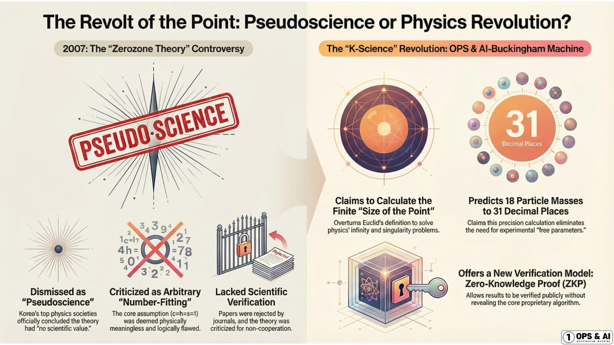
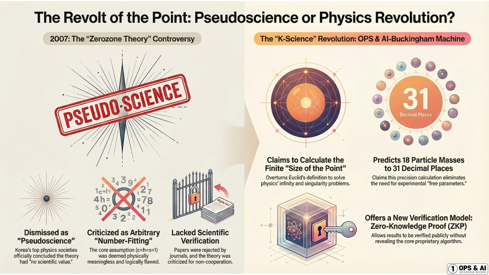
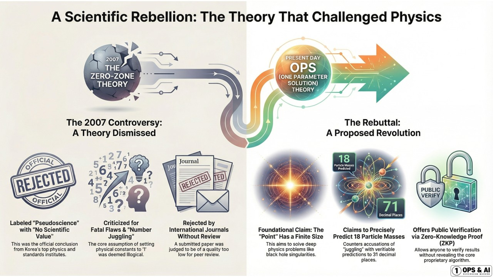
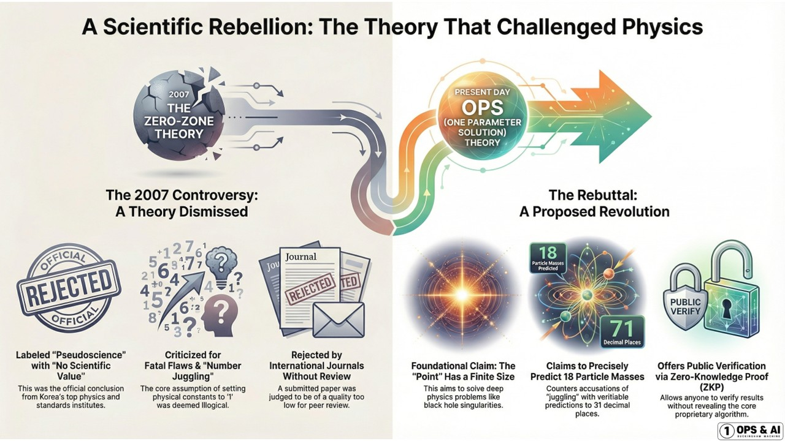

계산 문명의 새로운 시작
A New Era of Computational Civilization
계산 문명의 새로운 시작
A New Era of Computational Civilization
2천 년 과학의 공리를 뒤집고 계산 문명의 헌장을 선포하다
Overturning 2,000 Years of Scientific Axioms and Declaring the Charter of Computational Civilization
『점의 반란』은 "점에는 크기가 없다"는 유클리드의 공리가 틀렸다는 발견에서 시작하여, 과학의 근본 전제를 재정의하는 혁명적 저서입니다. 이 책은 실험이 진리를 찾는 것이 아니라 확인하는 과정임을 증명하며, 실험 없이도 진리를 계산할 수 있는 새로운 과학 패러다임을 제시합니다.
"The Rebellion of the Point" is a revolutionary work that begins with the discovery that Euclid's axiom "a point has no size" is incorrect and redefines the fundamental premises of science. This book proves that experiments confirm rather than discover truth, and presents a new scientific paradigm where truth can be calculated without experiments.
AI 시대, 양자컴퓨팅 시대를 맞아 과학의 패러다임이 실험 중심에서 계산 중심으로 전환되어야 하는 시점입니다. 이 책은 그 전환의 이론적 기반을 제공합니다.
In the era of AI and quantum computing, the scientific paradigm must shift from experiment-centric to calculation-centric. This book provides the theoretical foundation for that transition.
"점에는 크기가 없다" - 이것은 거짓이다
2천 년 동안 의심받지 않았던 유클리드의 제1공리가 틀렸습니다.
점은 실재하며 측정 가능한 크기를 가집니다.
"A point has no size" - This is false
Euclid's first axiom, unquestioned for 2,000 years, is incorrect.
Points are real and have measurable size.
실험은 진리를 찾는 게 아니라 확인하는 것
실험 결과가 진리가 아니라, 진리를 실험으로 확인할 뿐입니다.
OPS를 통해 실험 없이도 진리를 계산할 수 있습니다.
Experiments confirm truth, not discover it
Experimental results are not truth itself; experiments merely confirm truth.
Through OPS, truth can be calculated without experiments.
모든 물리 현상은 단 하나의 파라미터로 계산 가능
수많은 파라미터와 복잡한 수식이 필요하다고 믿었던 물리학이
실제로는 단 하나의 파라미터(OPS)만 있으면 충분합니다.
All physical phenomena can be calculated with just one parameter
Physics, believed to require numerous parameters and complex equations,
actually needs only one parameter (OPS).
계산이 진리를 증명하는 게 아니라, 진리가 계산을 증명
전통 과학: 계산 → 진리
OPS 과학: 진리(OPS) → 계산
완전히 뒤집힌 패러다임입니다.
Not calculation proving truth, but truth proving calculation
Traditional science: Calculation → Truth
OPS science: Truth (OPS) → Calculation
A completely reversed paradigm.
크기를 가진 물리적 실체와 과학적 혁명
Physical Entity with Size and Scientific Revolution
 

점의 새로운 발견
유클리드의 "점은 크기가 없다"는 2,000년 공리를 뒤집고, 점이 실제로 크기, 질량, 시간을 가진 물리적 실체임을 증명합니다.
이 혁명적 발견은 31자리 정밀도로 18개 입자 질량을 예측하며, 물리학의 패러다임을 근본적으로 전환합니다.
The New Discovery of the Point
Overturning Euclid's 2,000-year-old axiom that "a point has no size," we prove that a point is a physical entity
with size, mass, and time. This revolutionary discovery predicts 18 particle masses with 31-digit precision,
fundamentally transforming the paradigm of physics.
 

OPS & AI-버킹엄 머신
OPS(Optimized Point Size)는 점의 크기를 정의하여 무한대 문제를 해결하고, AI-버킹엄 머신은 이를 활용하여
물리 법칙을 검증하고 생성하며 예측하는 지능형 엔진입니다. 실험 없이 수학적 원리만으로 진리를 보장하며,
새로운 과학적 검증 모델을 제시합니다.
OPS & AI-Buckingham Machine
OPS (Optimized Point Size) defines the size of a point to solve infinity problems, and the AI-Buckingham Machine
uses this to verify, generate, and predict physical laws as an intelligent engine. It guarantees truth through
mathematical principles alone without experiments, presenting a new scientific verification model.

점의 반란: 계산 문명 시대의 새로운 패러다임
점의 반란은 2,000년 과학사를 뒤집는 혁명입니다. 유클리드의 공리를 넘어 점이 크기, 질량, 시간을 가진
물리적 실체임을 증명하며, 실험 없이 계산만으로 자연 법칙을 밝혀냅니다.
대한민국이 제안하는 K-사이언스, 계산 문명의 헌장이 여기 있습니다.
The Rebellion of the Point: A New Paradigm for the Age of Computational Civilization
The rebellion of the point is a revolution overturning 2,000 years of scientific history. Beyond Euclid's axiom,
it proves that a point is a physical entity with size, mass, and time, revealing natural laws through calculation alone
without experiments. Here is K-Science proposed by Korea, the charter of computational civilization.
유클리드 공리의 오류를 발견하고, 점의 실재성을 증명하는 과정을 담았습니다. 수학과 물리학의 근본 전제가 어떻게 뒤집히는지를 보여줍니다.
Documents the discovery of Euclid's error and the proof of point's reality. Shows how fundamental premises of mathematics and physics are overturned.
단 하나의 파라미터로 모든 물리 현상을 계산할 수 있는 OPS 이론의 개발 과정과 원리를 설명합니다.
Explains the development process and principles of OPS theory that can calculate all physical phenomena with just one parameter.
차원분석과 AI를 결합하여 수식 없이 물리법칙을 자동으로 도출하는 AI-버킹엄머신의 작동 원리를 소개합니다.
Introduces the operating principle of AI-Buckingham Machine that automatically derives physical laws without equations by combining dimensional analysis and AI.
OPS와 AI-버킹엄머신이 열어갈 계산 문명 시대의 비전과 산업적 응용 가능성을 제시합니다.
Presents the vision of computational civilization era to be opened by OPS and AI-Buckingham Machine, along with industrial application possibilities.
"실험은 진리를 찾는 것이 아니다. 실험은 이미 존재하는 진리를 확인하는 과정일 뿐이다. 진정한 과학은 진리를 계산하는 것이다."
"Experiments do not discover truth. They merely confirm truth that already exists. True science is calculating truth."
"2천 년 동안 우리는 '점에는 크기가 없다'고 믿었다. 하지만 점은 실재한다. 그리고 그 크기는 측정 가능하다. 이것이 점의 반란이다."
"For 2,000 years we believed 'a point has no size.' But points are real. And their size is measurable. This is the rebellion of the point."
"계산이 진리를 증명하는 것이 아니라, 진리가 계산을 증명한다. 이것이 계산 문명의 헌장이다."
"It's not calculation that proves truth, but truth that proves calculation. This is the charter of computational civilization."
『점의 반란』의 일부를 미리 확인하세요
Preview select pages from "The Rebellion of the Point"
아래에서 책의 처음 50페이지를 PDF로 미리 볼 수 있습니다. 2025년 11월 20일 출간
You can preview the first 50 pages of the book in PDF below. Published on November 20, 2025
단백질 구조 예측의 정확도를 획기적으로 향상시킬 수 있습니다. OPS를 통해 실험 없이도 단백질 접힘 문제를 계산으로 해결 가능합니다.
Can dramatically improve protein structure prediction accuracy. Through OPS, protein folding problems can be solved through calculation without experiments.
Tesla FSD, Optimus, Grok의 물리 시뮬레이션을 OPS로 고도화하여 실세계 물리 법칙을 더 정확하게 모델링할 수 있습니다.
Can advance physics simulation in Tesla FSD, Optimus, and Grok with OPS to model real-world physical laws more accurately.
노화 연구에 필요한 복잡한 생화학 반응을 OPS로 계산하여 실험 없이도 노화 메커니즘을 규명할 수 있습니다.
Can calculate complex biochemical reactions needed for aging research with OPS to elucidate aging mechanisms without experiments.